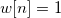
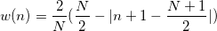
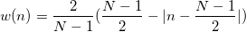
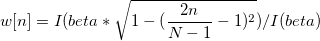

/math-f67871cd00ac973d0e2b80db93f3bcd3.png "F_n") } kann definiert werden als:
} kann definiert werden als:IFFT ist ein schneller Algorithmus, um inverse (oder rückwärts gerichtete) Fourier-Transformation (IDFT) durchzuführen, die den Prozess der DFT rückgängig macht. Die IDFT einer Sequenz {} kann definiert werden als:
/math-a5488e2df3433d356a803aa8913f8c82.png "x_i=\frac{1}{N}\sum _{n=0}^{N-1}F_ne^{\frac{2\pi j}{N}ni}")
Die Vorgänge der FFT und inversen FFT werden in Origin mit Hilfe der FFTW-Bibliothek ausgeführt. In FFTW wird die Berechnung der FFT von einem ausführenden Element durchgeführt, das aus C-Code-Blöcken besteht, die so genannten "Codelets". Jedes Codelet ist für einen Teil der Transformation spezialisiert. Mit diesen Codelets implementiert das ausführende Element den FFT-Algorithmus nach Cooley-Turkey, der die Größe des Eingangssignals (bezeichnet als N) in /math-865adb153c19640c27383f3fc1ee7e8a.png "N_1") und
und /math-0bf75941d6426e5efc12c0a20858452b.png "N_2") in Faktoren zerlegt. Durch rekursive Faktorzerlegung wird das Signal in kürzere Teile gebrochen. Die Ergebnisse der Transformationen der kurzen Teile werden multipliziert; schließlich wird die Transformation des ursprünglichen Signals berechnet. Weitere Informationen zu FFTW finden Sie unter http://fftw.org/.
in Faktoren zerlegt. Durch rekursive Faktorzerlegung wird das Signal in kürzere Teile gebrochen. Die Ergebnisse der Transformationen der kurzen Teile werden multipliziert; schließlich wird die Transformation des ursprünglichen Signals berechnet. Weitere Informationen zu FFTW finden Sie unter http://fftw.org/.
Einzelheiten zur automatischen Berechnung des Abtastintervalls finden Sie in der Dokumentation zum Algorithmus des Hilfsmittels FFT.
Fenster
Fenster werden zum Unterdrücken von Verlusten verwendet. Verschiedene Fenstertypen werden in Origin wie folgt definiert.
Rechteckiges Fenster:
 für und ansonsten Null.
Welch-Fenster:
![w[n]=1-\left( \frac{n-\frac 12(N-1)}{\frac 12(N+1)}\right) ^2](../images/Algorithm_(IFFT1)/math-36c370ad4c40cff081352cd6c147f4bf.png "w[n]=1-\left( \frac{n-\frac 12(N-1)}{\frac 12(N+1)}\right) ^2")
Dreieckiges Fenster:
Ungerade: /math-0301923ac9ba030df614e6d597b61aca.png "w(n)=\frac 2{N+1}(\frac {N+1}2-|n+1-\frac {N+1}2|)")
Gerade: 
Bartlett-Fenster:

Hanning-Fenster:
![w[n]=\frac 12[1-\cos (\frac{2\pi n}{N-1})]](../images/Algorithm_(IFFT1)/math-8f823e6c7622542b06faa1579d56e96a.png "w[n]=\frac 12[1-\cos (\frac{2\pi n}{N-1})]")
Hamming-Fenster:
![w[n]=0,54-0,46\cos (\frac{2\pi n}{N-1})](../images/Algorithm_(IFFT1)/math-a6fd9500215ae9924cd381d672708a6d.png "w[n]=0,54-0,46\cos (\frac{2\pi n}{N-1})")
Blackman-Fenster:
![w[n]=0.42-0.5\cos (\frac{2\pi n}{N-1})+0.08\cos (\frac{4\pi n}{N-1})](../images/Algorithm_(IFFT1)/math-d1c1de031af458564cd1fdf389d5fa25.png "w[n]=0.42-0.5\cos (\frac{2\pi n}{N-1})+0.08\cos (\frac{4\pi n}{N-1})")
Gaussian-Fenster:
![w[n]=exp(-0.5(Alpha( \frac{2n}{N-1}-1 ))^2) \,\!](../images/Algorithm_(IFFT1)/math-fab7a042f67f1dfb6dc5556e228508ec.png "w[n]=exp(-0.5(Alpha( \frac{2n}{N-1}-1 ))^2) \,\!")
Kaiser-Fenster:
